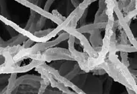

MICROBE OF THE MONTH

Phanaerochete crysosporium
Mycoremediation is a branch of bioremediation that uses fungi to degrade environmental pollutants. Under
this process, the natural metabolic processes of fungi and mainly the enzymes are used to break down a
wide
range of contaminants such as hydrocarbons, pesticides, heavy metals and complex organic compounds.
Mycoremediation is a method that utilises fungi mycelium in contaminated soil sites as a remedial
treatment.
Fungi have a better edge and are uniquely suited for the complex process of mycoremediation due to their ability to produce a vast range of extracellular enzymes that can break down complex organic molecules into simpler, less harmful substances. Unlike bacteria, which are limited to degrading pollutants in aqueous environments, fungi can colonise and penetrate solid substrates, such as soil, wood, and organic matter. This ability is particularly important in the degradation of pollutants like polycyclic aromatic hydrocarbons (PAHs), polychlorinated biphenyls (PCBs), and dioxins, which are often tightly bound to solid matrices and are resistant to bacterial degradation.
Among the fungi used in mycoremediation, Phanerochaete chrysosporium—a white-rot fungus—stands out for its remarkable ability to degrade some of the most toxic pollutants in the environment. Phanerochaete chrysosporium is one of the most studied fungi in the field of mycoremediation. As it is a white-rot fungus, it can degrade lignin, a complex polymer found in wood. The same enzymatic machinery that breaks down lignin also enables P. chrysosporium to degrade a wide range of environmental pollutants, those that are structurally similar to lignin. The most significant contribution of P. chrysosporium to mycoremediation is its ability to degrade polycyclic aromatic hydrocarbons (PAHs), which are persistent organic pollutants that pose serious health risks due to their cancer inducing properties. These hydrocarbons are found in substances like oil spills and industrial waste.
P. chrysosporium secretes lignin peroxidases and manganese peroxidases. These enzymes oxidise the polycyclic aromatic hydrocarbons or PAHs This breaks them down into smaller, less toxic compounds.
Enormous volumes of effluent are generated at different stages of textile manufacturing, as a result of the use of large amounts of chemicals and dyes. Effluent derived from the textile and dye activities can provoke serious environmental impact in the water bodies because of the presence of toxic reactive dyes, chlorolignin residues and dark coloration The biological breakdown of the chlorolignin residues and the chromophoric groups responsible for the dark coloration of the textile effluent can be accomplished by the use of enzymes from the white rot fungus, Phanerochaete chrysosporium. Application in Bioaugmentation:- In addition to its role in mycoremediation, P. chrysosporium is used in bioaugmentation, a process where specific microorganisms are introduced to contaminated environments to enhance the degradation of pollutants. The fungus can be added to soils or sediments contaminated with complex organic pollutants, such as PAHs, to accelerate the breakdown of these substances. These diverse applications of Phanerochaete chrysosporium shows how this microbe is essential in the removal of toxic substances from the soil and also help in the cleaning and detoxification of effluents released from the textiles industry. Beyond mycoremediation, this microbe also has importance in the pharmaceutical,environmental contexts.
Why Fungi?
Fungi have a better edge and are uniquely suited for the complex process of mycoremediation due to their ability to produce a vast range of extracellular enzymes that can break down complex organic molecules into simpler, less harmful substances. Unlike bacteria, which are limited to degrading pollutants in aqueous environments, fungi can colonise and penetrate solid substrates, such as soil, wood, and organic matter. This ability is particularly important in the degradation of pollutants like polycyclic aromatic hydrocarbons (PAHs), polychlorinated biphenyls (PCBs), and dioxins, which are often tightly bound to solid matrices and are resistant to bacterial degradation.
Phanerochaete chrysosporium- The main strain for Mycoremediation
Among the fungi used in mycoremediation, Phanerochaete chrysosporium—a white-rot fungus—stands out for its remarkable ability to degrade some of the most toxic pollutants in the environment. Phanerochaete chrysosporium is one of the most studied fungi in the field of mycoremediation. As it is a white-rot fungus, it can degrade lignin, a complex polymer found in wood. The same enzymatic machinery that breaks down lignin also enables P. chrysosporium to degrade a wide range of environmental pollutants, those that are structurally similar to lignin. The most significant contribution of P. chrysosporium to mycoremediation is its ability to degrade polycyclic aromatic hydrocarbons (PAHs), which are persistent organic pollutants that pose serious health risks due to their cancer inducing properties. These hydrocarbons are found in substances like oil spills and industrial waste.
How do they degrade these complex biomolecules?
P. chrysosporium secretes lignin peroxidases and manganese peroxidases. These enzymes oxidise the polycyclic aromatic hydrocarbons or PAHs This breaks them down into smaller, less toxic compounds.
Use of P.chrysosporium in textile industries:-
Enormous volumes of effluent are generated at different stages of textile manufacturing, as a result of the use of large amounts of chemicals and dyes. Effluent derived from the textile and dye activities can provoke serious environmental impact in the water bodies because of the presence of toxic reactive dyes, chlorolignin residues and dark coloration The biological breakdown of the chlorolignin residues and the chromophoric groups responsible for the dark coloration of the textile effluent can be accomplished by the use of enzymes from the white rot fungus, Phanerochaete chrysosporium. Application in Bioaugmentation:- In addition to its role in mycoremediation, P. chrysosporium is used in bioaugmentation, a process where specific microorganisms are introduced to contaminated environments to enhance the degradation of pollutants. The fungus can be added to soils or sediments contaminated with complex organic pollutants, such as PAHs, to accelerate the breakdown of these substances. These diverse applications of Phanerochaete chrysosporium shows how this microbe is essential in the removal of toxic substances from the soil and also help in the cleaning and detoxification of effluents released from the textiles industry. Beyond mycoremediation, this microbe also has importance in the pharmaceutical,environmental contexts.